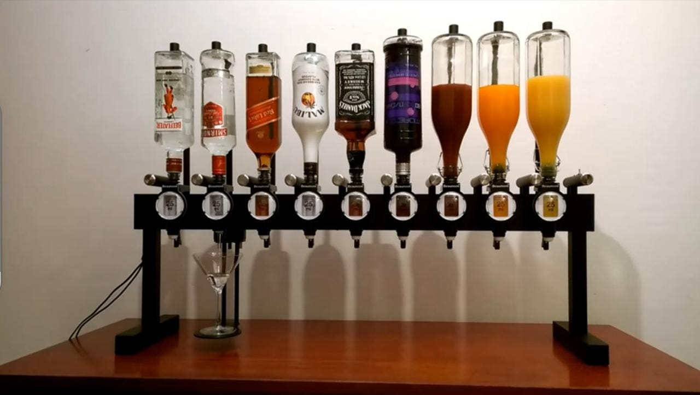

INFORME Y DIAGRAMA
1. Producto: Barman automizado
2. Problema: La preparación de cócteles puede ser un proceso divertido en una reunión familiar o amical, sin embargo esta puede conllevar un proceso tardado por la medición de cada ingrediente para que esta salga perfecta. Además, muchos sabemos lo tedioso que es estar interrumpiendo una fiesta para la elaboración de un trago, y a veces no se tiene el presupuesto suficiente para contratar a un barman que haga realidad el servicio.
3. Función: Es un barman robotizado que se encarga de mezclar bebidas como un verdadero profesional. Su función principal es la preparación de diferentes cócteles para reuniones, fiestas y ocasiones especiales.
4. Materiales a usar:
- Arduino 1
- Botón
- Perilla/botón
- Bomba de agua
- Pantalla LCD
- Tubos conectores (mangueras)
- Cables dupont
- Filamentos(impresión 3D)- para base exterior
- Base de madera- para base exterior
- Copa de cóctel
- Botellas de bebidas alcohólicas
5. Componentes:
- Arduino:
- Controlara el sistema automático de bebidas.
- Botón:
- Función de prender y apagar la máquina.
- Perilla:
- Tendrá dos funciones (indicador de la bebida y onzas; como botón) como su función es rotar opciones, está facilitará para así elegir la opción de bebida y de disminuir o aumentar las onzas para cada bebida destinada según sus preferencias, luego se presionará como si fuese un botón para iniciar la acción.
- Panel digital:
- Se visualizará el tiempo de demora hasta llegar al 100% del servicio al igual que la elección de bebida y onzas.
- Bomba de agua:
- Realizará la acción de impulsar el líquido de las bebidas seleccionadas hasta la copa.
- Tubos conectores (mangueras):
- Por donde pasarán las bebidas.
- Cables dupont:
- Realizará conexiones con el arduino y componentes.
6. Sistema:
-
ENTRADA:
- Pulsación de botón de inicio
-
PROCESADOR:
- Arduino 1 + código
-
ACTUADOR:
- Elección de bebida y onzas deseadas con la perilla.
- Las opciones de estas (bebidas y onzas) aparecerán en el panel digital.
- Cuando estas medidas estén seleccionadas y conformes, se procederá a presionar la perilla como botón para dar inicio a la acción.
- Estas pasarán por tubos conectores (mangueras) por medio de las bombas de agua que impulsarán el líquido hasta la copa.
7. Diagrama: